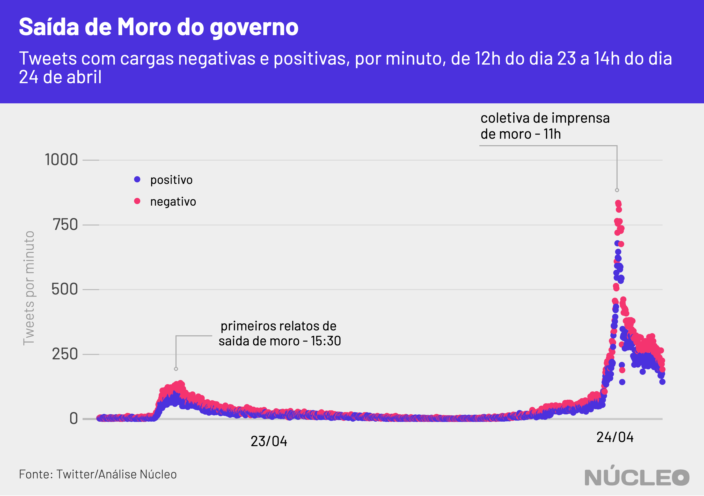

O anúncio, na manhã de 24 de abril, sobre a saída de Sergio Moro do Ministério da Justiça gerou a maior onda de engajamento político no Twitter desde o início das políticas de isolamento social no Brasil, em meados de março, mesmo considerado pronunciamentos polêmicos do presidente Jair Bolsonaro, manifestações de rua e até a demissão do ministro da Saúde.
No pico dessa onda, foram registrados 115,2 mil tweets únicos em uma única hora sobre o ex-ministro da Justiça, ao passo que o pronunciamento de Bolsonaro em 24 de março, maior engajamento até então, gerou 113 mil tweets únicos em uma hora.

É importante porque…
-
O Twitter sempre foi importante para a comunicação de Bolsonaro, inclusive em busca de apoio. Perder a conversa lá significa enfraquecimento dele em um de seus principais canais
-
Boa parte das autoridades se comunica com suas bases pelo Twitter, que se tornou um termômetro de discussão política e de assuntos do momento no país, pautando autoridades, imprensa e o debate em geral
Boa parte da militância e dos apoiadores de Bolsonaro se posiciona no Twitter, uma plataforma que nos últimos anos serve como termômetro sobre o debate político no Brasil.
O assunto teve tempo para ganhar força, e estava nas manchetes desde o dia anterior.
Diversos veículos de imprensa relataram na tarde de quinta-feira, dia 23, que Moro ameaçava sair do governo caso Bolsonaro prosseguisse com a demissão do diretor-geral da Polícia Federal, Maurício Valeixo, e não considerasse as determinações de Moro sobre um sucessor. Enquanto isso, a ala militar do governo buscava a permanência do ministro.
Mas, na manhã desta quarta-feira, uma decisão foi publicada no Diário Oficial da União exonerando o diretor, com a assinatura de Sergio Moro, mas sem seu conhecimento.
O Núcleo analisou 609 mil tweets que mencionam Sergio Moro desde o dia 17 de abril e constatou que, por conta de sua saída, a maioria das publicações continha uma carga negativa, principalmente pelas críticas à saída do ministro ou a Bolsonaro.
Em uma amostragem dos 100 principais tweets – aqueles com mais engajamento (curtidas e retweets) – desta sexta-feira sobre a saída do ministro, mais da metade eram favoráveis a ele, ao passo que apenas 10% tinham apoio declarado ao presidente.
Top 100 tweets classificados
| % do total | |
|---|---|
| mais favorável a Moro | 52% |
| neutro | 21% |
| desfavorável a ambos | 17% |
| mais favorável a Bolsonaro | 10% |
Mas o ministro também foi duramente criticado junto a Bolsonaro em alguns tweets, principalmente por parte de políticos e interlocutores de esquerda que questionaram as decisões que o levaram até o ministério.
Houve também uma minoria que criticou o ministro e apoiou Bolsonaro ao mesmo tempo, num indicativo de que, pelo menos para uma parcela de seus apoiadores, o presidente teve respaldo nessa disputa.
- Exemplo de tweet favorável a Moro
Olha... eu faço muitas críticas ao Sérgio Moro e as continuarei fazendo, mas esse pronunciamento precisa ser elogiado. To impressionada. (E atrasada pro trabalho pq não consegui sair da frente da TV).
— Gabriela Prioli (@GabrielaPrioli) April 24, 2020
- Exemplo de tweet crítico a Moro e a Bolsonaro
Tem gente dizendo que “Moro saiu com dignidade”. Rapaz, se tivesse dignidade não teria nem entrado...
— Túlio Gadêlha (@tuliogadelha) April 24, 2020
- Exemplo de tweet crítico a Moro e favorável a Bolsonaro
1. Pq o Moro nomear um delegado de sua confiança como diretor da PF é "técnico" e o Presidente fazê-lo é "interferência política"?
— Paulo Figueiredo Filho (@realpfigueiredo) April 24, 2020
2. Moro, sinto, mas segundo o nosso "Rule of Law", quem nomeia o diretor da PF é o PR. Se você queria fazê-lo, bastaria ter se candidatado em 2018.
CARGA DE SENTIMENTOS NOS TWEETS
A maioria das mensagens analisadas era negativas. Dos 609 mil tweets, em cerca de 40% deles foi possível analisar alguma carga de sentimento.

Sentimentos negativos indicam que o debate tende a ser carregado de adjetivos e críticas pesadas, ao passo que os positivos refletem frequentemente um tom mais ameno e elogioso (seja a Bolsonaro ou a Moro, por exemplo), mas também pode representar ironias (alguém usando termos afáveis para ironizar uma posição desfavorável, por exemplo).
Publicações com carga negativa são usuais no Twitter, à medida que a rede social é reconhecidamente um lugar de crítica política e campo de batalha ideológico entre esquerda e direita, mas o que chama a atenção nesse caso é a diferença em que essa distribuição acontece logo após o tweet de Mandetta e nos momentos seguintes.
Na imprensa
- Após pronunciamento de Bolsonaro, direita radical se isola no apoio a presidente ⋅ Folha de S.Paulo ⋅ (24/04/2020)
METODOLOGIA
O Núcleo capturou cerca de 609 mil tweets com o termo ‘Sergio Moro’ e variações ortográficas entre dias 17 e 24 de abril, utilizando a API gratuita do Twitter. O código para extração pode ser encontrado aqui.
O vocabulário dos tuítes foi comparado com dois léxicos da biblioteca lexiconPT, que relaciona diferentes palavras do português com valores de sentimentos positivos ou negativos atribuídos a elas. O algoritmo foi capaz de detectar a carga de sentimento de 310 mil tweets.
Como ainda não é possível saber quem certa carga de sentimento favorece ou critica, fizemos, então, uma classificação manual dos 100 tweets com mais engajamento (curtidas + retuítes), divididos entre:
- Mais favorável a Moro
- Mais favorável a Bolsonaro
- Desfavorável a ambos
- Neutro
Com a finalidade de manter a privacidade de usuários com perfis pouco notórios, o Núcleo não vai divulgar a base total com, os dados brutos – cada pessoa pode rodar o código de extração para obter esses resultados. Os dados com os 100 tweets mais populares e a série temporal podem ser acessados aqui.
A conta considera apenas tuítes únicos, ou seja, exclui retuítes e respostas a tuítes. Isso porque queremos medir a espontaneidade de publicações sobre o tema.